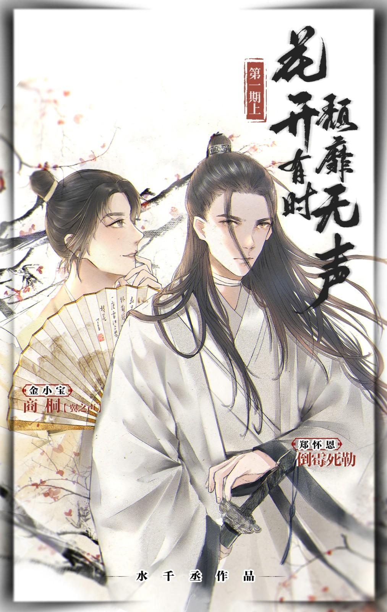

El hijo del hombre más rico de la región de Jiangnan se enamora de una "belleza" vestida de blanco gélido tras un encuentro inesperado, pero la verdadera identidad de esta "belleza" es en realidad…
Apuesto y distinguido, con un temperamento excepcional: Jin Xiao Bao no estaba destinado a ser descrito así. Pero como el joven amo de la gran familia Jin, divertido, considerado y generoso, sería una buena pareja incluso si la otra persona fuera la hija del emperador.
El lamentable y regordete Jin Xiao Bao, cuyas propuestas de matrimonio han fracasado una y otra vez; justo cuando se le han cerrado las puertas a este pequeño gordito, ¡¿por casualidad encontró a una mujer ideal esta misma noche?! Contemplando esos rasgos incomparablemente bellos, observando esa imponente y fría como el hielo, ¡papá, mamá, su hijo ha encontrado a su esposa!
Pero esta futura esposa, la joven Huai En, parece haber despertado mucha enemistad. Una vez más, en otra noche oscura, ventosa y sin luna, una noche sangrienta, una Huai En gravemente herida fue contaminada con un afrodisíaco del enemigo. ¡Qué buena oportunidad para que el apuesto héroe salvara a la bella! ¿El joven amo de la familia Jin, que hizo su glorioso debut, fue valientemente derrotado por la "esposa"?